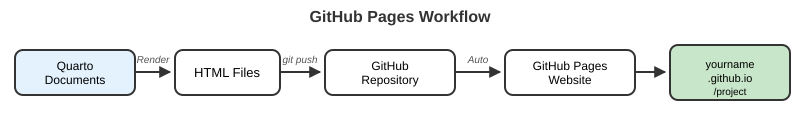

Appendix C - Git, GitHub & Version Control
Overview
This appendix is a reference for Lecture 08 (Git introduction) and Lecture 09 (Git, GitHub & GitHub Pages). It covers Git and GitHub, the standard tools for version control and collaboration in scientific computing. You will learn how to track changes in your code, collaborate with others, and host your work online, including a Quarto website like this course’s own site (wcresko.github.io/BioE_Comp_Tools_Fa2026). These skills are central to reproducible research.
For Quarto authoring itself, see Appendix F - Quarto & Markdown Syntax. Unfamiliar terms are defined in the Glossary. The free, comprehensive reference for everything Git is Scott Chacon & Ben Straub, Pro Git, 2nd ed. (Apress, 2014), available online at https://git-scm.com/book.
What is Version Control?
Git and GitHub
What is Git?
- Git is a distributed version control system
- It tracks changes in your files over time as a series of snapshots called commits
- It lets several people work on the same project
- It keeps a complete history of every change, so you can always go back
- It runs locally on your own computer; no internet connection is needed
What is GitHub?
- GitHub is a web-based hosting service for Git repositories
- It provides cloud storage (a remote) for your repositories
- It adds collaboration features: pull requests, issues, code review
- It hosts documentation and websites (GitHub Pages)
- It is free for public and private repositories
Git and GitHub are not the same thing. Git is the program that tracks versions on your computer. GitHub is one website where you can store and share Git repositories (GitLab and Bitbucket are others).
Git Workflow Concept
Every file you track moves through four places:

- Track changes: every commit records exactly what changed, when, and by whom
- Collaboration: several people can work at the same time and merge their work
- Backup: your work lives on your computer and on GitHub
- Experimentation: try new things on a branch without breaking working code
Setting Up Git
Install and Configure Git
# Check whether Git is already installed
git --version
# macOS: install Apple's command line developer tools (includes Git)
xcode-select --install
# ...or, if you use Homebrew:
brew install git
# Windows (WSL Ubuntu, recommended in this course)
sudo apt update
sudo apt install git
# Windows (native): download the installer from https://git-scm.com
# (it also installs "Git Bash", a small Unix-like terminal)
# Linux (Ubuntu/Debian)
sudo apt install git# Set your name and email (attached to every commit you make)
git config --global user.name "Your Name"
git config --global user.email "you@uoregon.edu"
# Name the first branch "main" in new repositories
git config --global init.defaultBranch main
# Optional: choose the editor Git opens for messages (here, VS Code)
git config --global core.editor "code --wait"
# Check your settings
git config --list- Git must be installed before you can use it. On Talapas it is already available.
- Your name and email are attached to every commit. Use the same email as your GitHub account so GitHub links commits to your profile.
init.defaultBranch mainmatches GitHub’s default branch name, so your local and remote branches line up.- These settings only need to be configured once per computer (including once on Talapas).
GitHub
GitHub for Scientific Collaboration
Why use it for research projects?
- Reproducibility: complete history of how an analysis was developed
- Collaboration: work with colleagues anywhere
- Documentation: README files, wikis, and GitHub Pages websites
- Issues: track bugs, ideas, and to-dos
- Releases: tag the exact version of code used for a publication
- DOI integration: connect a repository to Zenodo to get a citable DOI
Creating a GitHub Account
Steps to get started
- Go to github.com
- Click “Sign up”
- Choose a username (professional and memorable; it will appear in your website URL)
- Add your university email (you can add a personal email as well)
- Verify your account and turn on two-factor authentication (GitHub requires it)
- Consider the GitHub Student Developer Pack:
- Free GitHub Pro and GitHub Copilot while you are a student
- Access to many other development tools
- Apply at education.github.com
Authenticating: Tokens, SSH Keys, or the GitHub CLI
GitHub does not accept your account password when you git push over HTTPS (or clone and pull private repositories). You need one of the following, set up once per computer:
# Install the GitHub CLI
brew install gh # macOS
sudo apt install gh # WSL Ubuntu / Linux (or see https://cli.github.com)
# Log in; choose HTTPS and "Login with a web browser"
gh auth login
# Check that it worked
gh auth statusgh auth login stores a credential and configures Git to use it, so later git push commands just work.
- On GitHub: Settings → Developer settings → Personal access tokens
- Generate a token with access to your repositories, and set an expiration date
- Copy it immediately (GitHub shows it only once)
- When
git pushasks for a password, paste the token instead
Let a credential helper remember it so you are not asked every time (Git for Windows and macOS do this automatically; on Linux, the GitHub CLI or Git Credential Manager can handle it).
# Generate a key pair (press Enter to accept the default location)
ssh-keygen -t ed25519 -C "you@uoregon.edu"
# Print the PUBLIC key and copy it
cat ~/.ssh/id_ed25519.pubPaste the public key into GitHub → Settings → SSH and GPG keys → New SSH key, then clone with the SSH URL (git@github.com:username/repo.git) instead of the HTTPS URL. Test with ssh -T git@github.com.
Never share or commit the private key (~/.ssh/id_ed25519, without .pub) or a personal access token. Treat both like passwords.
Basic Git Commands
Initialize a Repository
# Create a new repository
mkdir my_project
cd my_project
git init# Clone an existing repository from GitHub
git clone https://github.com/username/repository.gitgit initturns the current directory into a Git repository by creating a hidden.git/folder that holds the historygit clonedownloads an existing repository from GitHub, with its complete history, and sets it up as theoriginremote- Run
git initonly once per project, and never inside another repository - A common beginner approach: create the repository on GitHub first (with a README), then
git cloneit
Track Changes
# Check status: what has changed?
git status
# See exactly what changed, line by line
git diff # unstaged changes
git diff --staged # staged changes
# Add files to the staging area
git add filename.txt # Add a specific file
git add . # Add all changes in this directory
# Commit changes (save a snapshot)
git commit -m "Descriptive message about changes"git statusshows which files are modified, staged, or untracked. Run it often.git diffshows the actual line-by-line changesgit addstages changes, preparing them to be committedgit commitcreates a permanent snapshot with a descriptive message- Think of staging as choosing which photos go into an album, and committing as printing the album
Undoing Changes
# Discard unsaved edits to a file (restore the last committed version)
git restore filename.txt
# Unstage a file (keep your edits, just remove it from the staging area)
git restore --staged filename.txt
# Fix the message of the most recent commit (only if not yet pushed)
git commit --amend -m "Better message"
# Undo a commit that has already been pushed, by adding a new
# commit that reverses it (safe for shared history)
git revert <commit-hash>git restore(Git 2.23+) is the modern command for undoing changes to files. Older tutorials usegit checkout -- filenameandgit reset HEAD filenamefor the same things.git restore filenamepermanently discards your uncommitted edits to that file. There is no undo.- Only rewrite history (
--amend,reset) for commits you have not pushed. For pushed commits, usegit revert.
Working with Remotes
# Connect a local repository to a GitHub repository
git remote add origin https://github.com/username/repo.git
# View remotes
git remote -v
# First push of a branch: -u sets "upstream" so later you can type just git push
git push -u origin main
# Push later changes
git push
# Pull changes from GitHub (fetch + merge)
git pull
# Fetch without merging
git fetch origin- origin is the conventional name for your primary remote (GitHub)
pushsends your local commits to GitHub;pulldownloads remote commits and merges them into your local copyfetchdownloads changes but does not merge them, so you can inspect them first- Always
pullbefore you start working so you are building on the latest version - If a push is rejected with “Updates were rejected because the remote contains work that you do not have locally,” run
git pull, resolve anything that needs it, then push again
Branching and Merging

# List branches (* marks the current one)
git branch
# Create a new branch and switch to it
git switch -c feature-branch
# Switch back to main
git switch main
# Merge feature-branch into the current branch (main)
git merge feature-branch
# Delete the branch after merging
git branch -d feature-branch- Branches let you work on a feature or experiment independently
- The
mainbranch should always contain working code - Create a branch for new work, then merge it back when it is ready
git switch(Git 2.23+) is the modern command for changing branches. You will see the older equivalents everywhere online:git checkout -b feature-branchcreates and switches, andgit checkout mainswitches.- If both branches changed the same lines, Git reports a merge conflict and marks the file with
<<<<<<<,=======, and>>>>>>>. Edit the file to keep what you want, delete the markers, thengit addandgit commit.
Common Git Workflow
# 1. Start your day: update your local copy
git switch main
git pull
# 2. Create a feature branch
git switch -c new-feature
# 3. Make changes and commit regularly
git add .
git commit -m "Add hydrogel stiffness analysis"
# 4. Push your branch (the first time, set upstream with -u)
git push -u origin new-feature
# 5. Open a pull request on GitHub (on the website, or with: gh pr create)For a solo project, it is perfectly fine to skip branches and simply pull, add, commit, and push on main.
Commit messages:
- Be descriptive and concise
- Use the imperative mood: “Add feature,” not “Added feature”
- Reference issues: “Fix bug #123”
- Commit small, logical units of work often, rather than one giant commit per week
Repository organization:
project/
├── README.md # Project description
├── .gitignore # Files Git should ignore
├── data/ # Raw data (often listed in .gitignore)
├── analysis/ # Analysis scripts
├── results/ # Output files
└── docs/ # Documentation / rendered websiteViewing Commit History
# View commit history
git log
# Compact one-line format
git log --oneline
# With a graph of branches
git log --graph --oneline --all
# Show the changes in each commit
git log -p
# Show only the last 3 commits
git log -3
# Show one commit in detail
git show <commit-hash>git logshows the complete history of commits (pressqto exit the pager)- Each commit has a unique hash (ID), author, date, and message
--onelinegives a compact view for quick scanning; the short hash is enough to refer to a commit--graphdraws the branch structure in the terminal
.gitignore File
A .gitignore file lists files Git should never track:
# Create a .gitignore file in the top level of the repository
touch .gitignore# Large data files
*.fastq
*.fastq.gz
*.bam
*.vcf
data/raw/
# R files
.Rhistory
.RData
.Rproj.user/
# Quarto build caches
.quarto/
*_cache/
# Output files
results/temp/
*.log
# System files
.DS_Store
# Secrets: never commit these
.env.gitignoretells Git which files to leave untracked- Put large data files, temporary files, and system files here to keep the repository clean and small
- GitHub warns about files over 50 MB and rejects files over 100 MB. Keep large data out of Git and store it elsewhere (see Appendix G for data repositories)
- Sensitive files (passwords, tokens, API keys) should always be ignored
.gitignoreonly affects untracked files. If a file was already committed, remove it from tracking withgit rm --cached filename- GitHub provides ready-made templates: https://github.com/github/gitignore
Git in VS Code and Positron
You do not have to type every Git command. VS Code and Positron both have a built-in Source Control panel (the branching icon in the left sidebar, or Ctrl+Shift+G / Cmd+Shift+G):
- Changed files appear in a list; click one to see a side-by-side diff
- Click + next to a file to stage it (
git add) - Type a message and click Commit (
git commit) - Click Sync Changes to pull and push
- The branch name in the bottom status bar lets you switch or create branches
RStudio has a similar Git tab when you work inside an RStudio Project (see Appendix D). Knowing the command-line versions is still important: it is what you will use on Talapas, and it helps you understand what the buttons do.
GitHub Pages
Host Your Research Website for Free

Setup steps
- Create a repository on GitHub
- Clone it to your computer
- Create or edit your Quarto project in VS Code, Positron, or RStudio
- Render it (
quarto render) so the HTML lands indocs/ - Add and commit your changes
- Push to GitHub
- Enable Pages in the repository settings (below)
- Your site is live at
https://username.github.io/repo_name
GitHub Pages Configuration
- Go to Settings → Pages
- Source: Deploy from a branch
- Branch: main
- Folder:
/docs - Click Save; the first build takes a minute or two
# In _quarto.yml
project:
type: website
output-dir: docs# Add an empty .nojekyll file in the top level of the repository so
# GitHub Pages serves Quarto's HTML as-is, without Jekyll processing
touch .nojekyll
# Render, then commit and push the rendered site
quarto render
git add .
git commit -m "Update website"
git push- GitHub Pages serves static HTML files from your repository
- Rendering into a
docs/folder onmainis the simplest approach for Quarto projects, and it is how this course website is published - Quarto renders your
.qmdfiles to HTML; GitHub Pages serves that HTML - You must render before you push: GitHub serves whatever is in
docs/, so edits to.qmdfiles do not appear on the site until you re-render and push the updateddocs/ - Each push updates the live site within a minute or two (check progress under the repository’s Actions tab)
- Alternatives:
quarto publish gh-pagesrenders and pushes to a separategh-pagesbranch, and a GitHub Actions workflow can render on GitHub’s servers. See the Quarto guide linked below.
Further reading
- Scott Chacon & Ben Straub, Pro Git, 2nd ed. (free online): https://git-scm.com/book
- GitHub Docs: https://docs.github.com
- GitHub Skills, free interactive courses (Introduction to GitHub, GitHub Pages, and more): https://skills.github.com
- GitHub CLI manual: https://cli.github.com/manual/
- Jenny Bryan, Happy Git and GitHub for the useR: https://happygitwithr.com
- Software Carpentry, Version Control with Git: https://swcarpentry.github.io/git-novice/
- Quarto, publishing to GitHub Pages: https://quarto.org/docs/publishing/github-pages.html
- Using Git source control in VS Code: https://code.visualstudio.com/docs/sourcecontrol/overview
- Back to the Resources hub